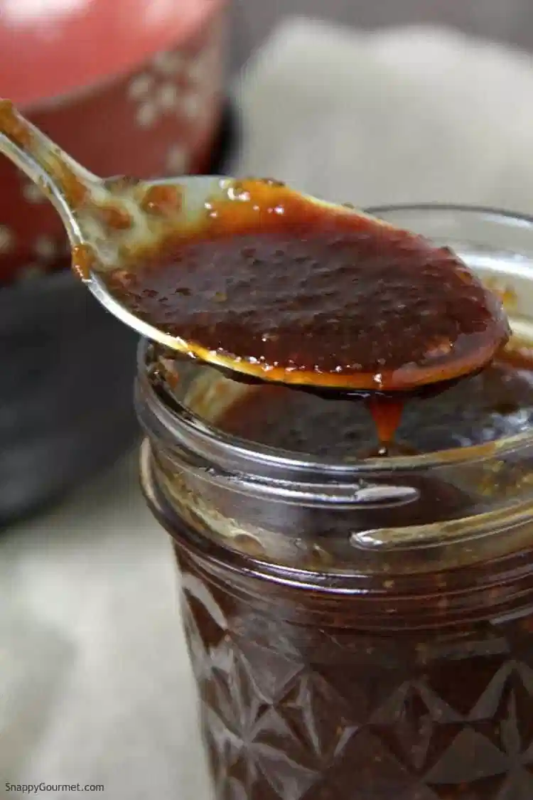

!
Korean Style BBQ Sauce
Korean Style BBQ Sauce
Description
The following is a recipe to be used along with the included Crunchy Tofu recipe to create what is known as the Ozmus dish, "The Crunchy Stuff".
Ingredients
- 3/4 cup sugar
- 2 tbsp. Minced garlic
- 6 tbsp. Water
- 6 tbsp. Soy sauce
- 1.5 tbsp. Rice wine vinegar
- 2 tbsp Mirin
- 1.5 tbsp. Chili garlic sauce
- 1.5 tsp. Cornstarch
- 2 tbsp Cooking oil
Steps
- Heat cooking oil in wok or large skillet
- other ingredients together.
- Use remaining frying oil and pour in sauce.
- Stir constantly and get sauce to a boil.
- Continue cooking until thick.